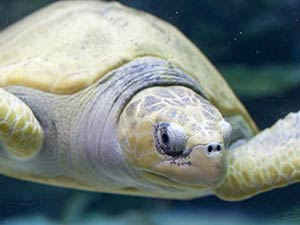

Изображения
Элемент img
Элемент img внедряет изображение в текущий документ в месте определения элемента. Элемент img не имеет содержимого — он замещается на ходу изображением, указанным в атрибуте src.
Альтернативный текст


Атрибут alt предоставляет краткое описание изображения. Он содержит альтернативный текст, который отображается, если изображение не может быть выведено.
Пользовательские агенты должны отображать альтернативный текст, если они не поддерживают изображения, или сконфигурированы так, чтобы не показывать изображения (отключен показ изображений).
Размеры изображения


Атрибуты width и height задают размеры области изображения. Если оба атрибута не заданы, размер изображения будет определен после его полной загрузки, после чего размеры области будут изменены для размещения содержания картинки.
Если задан только один из атрибутов, второй размер будет высчитан в соответствие с пропорциями изображения и заданным атрибутом.
При указании обоих атрибутов ПА «впишет» изображение в область с указанными размерами.
Для добавления гибких (responsive) изображений (таких, которые отображаются хорошо на устройствах с сильно отличающимися размерами экрана, разрешением, и другими характеристиками) используют атрибуты sizes и srcset.
Атрибут sizes задаёт размеры изображения для разных макетов страницы.
Атрибут srcset задаёт путь к графическим файлам с учётом размера изображения и устройств.
Подпись к изображению

figurecaption в составе figureДля группирования любых элементов, например, изображений и подписей к ним используется элемент figure.
Он не должен быть связан непосредственно с основным содержимым документа и при его перемещении в другое место смысл текста не должен меняться.
Обычно применяется для иллюстраций, фрагментов кода, схем, графиков, диаграмм и др.
Элемент figcaption содержит описание для элемента figure. Он должен быть первым или последним элементом в группе.
Элемент picture

picture
HTML-элемент picture служит контейнером для одного или более элементов
source и одного элемента img для обеспечения оптимальной версии изображения
для различных размеров экрана. Браузер рассмотрит каждый из дочерних элементов source
и выберет один, соответствующий лучшему совпадению; если совпадений среди элементов source
найдено не будет, то будет выбран файл, указанный атрибутом src элемента img.
Затем выбранное изображение отображается в пространстве, занятом элементом img.